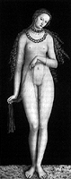

Get A Life
Get A Life 
|
"The Soul of Sex" reminds you to grasp the one you've already got
You've worked a full day, gone to the gym, made and washed up the dinner, thrown the whites into the dryer, paid some bills, perhaps read a book, listened to music, or watched TV before falling into bed. Pretty sexy stuff, eh? Thomas Moore thinks so. Approve, inhabit, and experience all the stuff of life--mundane and exciting--as being part of your sexuality, as being nourishment for your soul, and you may think so, too. Moore, a former Catholic monk and professor of religion with additional degrees in musicology and philosophy, has written The Soul of Sex: Cultivating Life As An Act of Love (HarperCollins; $25), a stunning book outlining just such a juicy grasp on the one short circuit we have this time around. Living in a society ostensibly obsessed with sex and images of sex--one that portrays lovemaking as existing solely for the benefit of young, slender, attractive people--may make this notion seem fanciful, off-base, or outrageous. But as presented in the elegant language that Moore employs, this thoughtful thesis instead works from the most ancient myths of the Greeks and Romans, from passion plays and religious teachings, from poetry and the iconographic image of Marilyn Monroe, to pull together a passionately sober and intelligent discussion of sexuality's role in human life. Author of Care of the Soul and The Re-Enchantment of Everyday Life, among others, Moore is uniquely qualified through his many years as a therapist, his 12 years of joyous monastic celibacy, and his role as a husband and father of two children, to examine this topic from many different directions. "We have a habit of talking about sex as merely physical," he writes in the first chapter, "and yet nothing has more soul. Sex takes us into a world of intense passions, sensual touch, exciting fantasies, many levels of meaning, and subtle emotions. It makes the imagination come alive with fantasy, reverie, and memory. Even if the sex is loveless, empty, or manipulative, still it has strong repercussions in the soul, and even bad sexual experiences leave lasting, haunting impressions."  Arguing that we have mechanized ourselves to the extent that we see body and mind as individual units with little connection to one another, Moore deconstructs the mythos of our subterranean archetypes, pulling up and celebrating the inherent beauty that is each human's birthright, the sublime elements of bawdiness and humor in sexual discourse, the concepts of morality, celibacy, and chastity, and the importance of the nuptial bed. Writing with calm measure, Moore discusses the difference between the penis and the phallus, an über-symbol of masculine beauty, the flowering of the vagina, and the importance of gaze, adornment, and very ordinary pleasures--such as going to work and throwing the whites in the dryer--as adding to a deepening of our sexual souls. Avoiding pedantry, Moore concludes with an appreciation to what he terms the Epicurean life, an existence comprised of a hearty appreciation of earthy pleasures, humor, other people, work well done, and art--all imbued with a firm grasp on the pleasure-seeking and -giving principles of a balanced sexuality. "As I interpret it," he writes, "the Epicurean approach is an active way of life where we do things that give pleasure. We cultivate friendships, we write letters, we invite friends and family into our homes, we play music and paint, we make good food, and we contribute to society. In Epicurean sex we cultivate a sensuous life, we go to the trouble of making sex an art, we give pleasure to our partner, we live from love and affection, and most of all, in great tranquility and in the absence of ambition, we enjoy ordinary nights, mornings, and days of lovemaking." How simple this sounds; how difficult to acheive. A slow, careful reading of The Soul of Sex makes this commonsensical goal all the more available.
Back to the Table of Contents.
Surf the Boulevards network
to other great alternative
content sites.
|